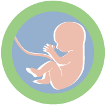

Hiperprolactinemia

La hiperprolactinemia es un trastorno endocrino común al cual el médico de atención primaria se enfrenta en su práctica clínica y hace parte de los diagnósticos diferenciales de motivos de consulta frecuentes, especialmente en la población femenina (alteraciones del ciclo menstrual, infertilidad y galactorrea).
El objetivo de este material es servir como guía para el enfoque, en el ámbito de la atención primaria, para de aquellos pacientes con una posible hiperprolactinemia. Para ello se presentan las siguientes secciones:
Sección 1: Generalidades.
En esta sección se abordarán aspectos generales acerca de la estructura, producción y liberación de la prolactina. Su papel fisiológico más importante en la adaptación materna para la gestación y datos de la epidemiología sobre la hiperprolactinemia y los prolactinomas.
-
Principales factores implicados en la producción y secreción de la prolactina.
-
 Papel de la prolactina en la adaptación materna a la gestación.
-
Causas de la Hiperprolactinemia.
-
Epidemiología de la Hiperprolactinemia.
Sección 2: Presentación clínica.
En esta sección se describirán las manifestaciones clínicas más frecuentes de la hiperprolactinemia, tanto en hombres como en mujeres.
Macro adenoma hipofisario
- Cefalea producida por la hipertensión endocraneana.
- Defectos visuales como consecuencia de una compresión del quiasma óptico.
- Compresión de pares craneanos: III, IV, V1, V2 y VI puede producir diplopía.
Galactorrea
Por la acción lactotrópica de la prolactina.
Osteoporosis
Como consecuencia del hipogonadismo.
Hipogonadismo hipogonadotropico
- Puede ser consecuencia tanto del exceso de prolactina como del efecto de un prolactinoma.
- Puede producir: Oligomenorrea, ciclos anovulatorios, infertilidad e hirsutismo.
Macro adenoma hipofisario
- Cefalea producida por la hipertensión endocraneana.
- Defectos visuales como consecuencia de una compresión del quiasma óptico.
- Compresión de pares craneanos: III, IV, V1, V2 y VI puede producir diplopía.
Galactorrea
Por la acción lactotrópica de la prolactina.
Osteoporosis
Como consecuencia del hipogonadismo.
Hipogonadismo hipogonadotropico
- Puede ser consecuencia tanto del exceso de prolactina como del efecto de un prolactinoma.
- Puede producir: Impotencia, disminución de la libido, infertilidad y ginecomastia.
Sección 3: Medición e interpretación de los niveles de prolactina.
Medición e interpretación de los niveles de prolactina: en esta sección se revisará la técnica con la cual se estiman los niveles de prolactina y sus posibles errores y limitaciones.
Sección 4: Tratamiento de la hiperprolactinemia.
Sección 5: Poniendo en practica lo aprendido
Poniendo en practica lo aprendido: en esta sección, mediante casos clínicos, se repasarán los conceptos vistos en las secciones anteriores.
Patricia, 22 años.
Motivo de consulta: Desea quedar en embarazo.
- Comenta que hace aproximadamente un año dejo los anticonceptivos orales y desde ese momento no ha tenido menstruaciones. Antes del inicio de los anticonceptivos los ciclos menstruales eran irregulares y se caracterizaban por oligomenorrea. Desde hace aproximadamente 3 meses tiene galactorrea.
- Patricia no tiene cefalea, disminución en la libido, cambios visuales o ningún otro tipo de síntoma.
- No consume ningún medicamento.
- Su examen físico es completamente normal excepto por la salida espontanea de una secreción blanca por sus pezones.
- Tiene un valor de prolactina inicial de 171 ng/mL y una segunda medición de 163 ng/mL.
- La prueba de embarazo es negativa y su valor de TSH es normal.
¿Es muy probable que el cuadro clínico de Patricia se pueda explicar por una macroprolactinemia?
Verdadero
Falso

La macroprolactina es biológicamente inactiva, por lo tanto no debe producir síntomas.
Algunos síntomas como la oligomenorrea son bastante inespecíficos, sin embargo, la galactorrea no es un síntoma usual.
Sin embargo algunas personas consideran que SIEMPRE debería descartarse una macroprolactinemia en presencia de unos valores elevados de prolactina.
Ver respuesta
¿la hiperprolactinemia de Patricia es mas probablemente orgánica o funcional?
Orgánica
Funcional
La paciente no se encuentra en tratamiento con ninguno medicamento que pueda alterar la secreción de prolactina.
Tiene una prueba de embarazo negativa y una TSH normal lo cual descarta al embarazo y el hipotiroidismo como causas de la hiperprolactinemia.
Nada en la historia clínica sugiere alguna otra causas de hiperprolactinemia funcional.
Al ser una hiperprolactinemia orgánica se le solicito una resonancia magnética de silla turca.
La resonancia magnética de silla turca reporta una lesión localizada en la porción central de la adenohipófisis de 12 mm en su diámetro mayor, no tiene extensión a los senos cavernosos y no esta en contacto con el quiasma óptico.
Se le solicitan el resto de las hormonas del perfil hipofisario las cuales están normales.
Ver respuesta
¿Cuál de las siguientes opciones de tratamiento cree que es la mejor para Patricia?
- Seguimiento anual de los niveles de prolactina.
- Tratamiento con anticonceptivos orales.
- Remisión a neurocirujano experto en hipófisis.
- Tratamiento con agonistas dopaminergicos.
Ver respuesta
¿Cual de los agonistas dopaminergicos disponibles seria el de elección para Patricia?
- Bromocriptina.
- Cabergolina.
- Quinagolida.
- Pergolida.
Ver respuesta
Hernan, 36 años.
Motivo de consulta: Disfunción eréctil.
- Comenta que desde los 29 años aproximadamente tiene disminución en el deseo sexual, dificultades para mantener una erección, disminución subjetiva en el volumen del eyaculado.
- Comenta que en los últimos dos años viene aumentando de peso y ha notado crecimiento de las mamas.
- Consume inhibidores de la 5 fosfodiesterasa con regularidad con una eficacia variable, no consume otros medicamentos.
- A su examen físico es llamativa la distribución de la grasa con una obesidad de predominio central y una ginecomastia de aproximadamente 5 cm bilateral, no hay secreción por los pezones, por lo demás es normal.
- Trae una medición de prolactina en 2436 ng/mL, una TSH normal y una testosterona total en 170 ng/dL (Referencia 270 – 1070 ng/dL).
Dentro de los errores y limitaciones con la técnica de medición de la prolactina ¿Cuál es a el que deberíamos prestarle espacial atención en un caso como el de Hernan?
- Macroprolactinemia.
- Efecto gancho.
- Presencia de anticuerpos heterofilos.
El efecto gancho causado por niveles extremadamente elevados de prolactina en suero.
Esto produce saturación simultánea de los anticuerpos de captura y detección.
No se forma el sánduche y por lo tanto se subestima de manera importante el valor de la prolactina.
El suero de Hernan debe ser analizado puro y después de una dilución cuantiosa (1:100 – 1:1000).
Ver respuesta
¿la hiperprolactinemia de Hernan es mas probablemente orgánica o funcional?
organica
funcional
Los inhibidores de la 5 fosfodiesterasa no están entre los medicamentos asociados a alteraciones en al liberación de prolactina.
Usualmente las hiperprolactinemias funcionales no cursan con valores tan elevados de prolactina.
Al ser una hiperprolactinemia orgánica se le solicito una resonancia magnética de silla turca.
La resonancia magnética de silla turca reporta una lesión selar con extensión supraselar en contacto con el quiasma óptico sin comprimirlo ni desplazarlo e invasión a ambos senos cavernosos, en su diámetro mayor mite 27mm.
Se le solicitan el resto de las hormonas del perfil hipofisario y se confirma un hipogonadismo hipogondotropico, el resto del perfil es normal.
Ver respuesta
¿Podría la hiperprolactinemia asociada al macroprolactinoma explicar todos los síntomas de Hernan?
Verdadero
Falso
Ver respuesta
¿Cuál de las siguientes opciones de tratamiento cree que es la mejor para Hernan?
- Seguimiento anual de los niveles de prolactina.
- Remisión a neurocirujano experto en hipófisis.
- Quinagolida.
- Tratamiento con agonistas dopaminergicos.
Ver respuesta
¿Cual de los agonistas dopaminergicos disponibles seria el de elección para Hernan?
- Bromocriptina.
- Cabergolina.
- Quinagolida.
- Pergolida.
La cabergolina es mucho mejor tolerada que la bromocriptina y pudiera ser un poco mas efectiva. La quinagolida y pergolida se reservan para casos de resistencia y no están disponibles en Colombia.
Ver respuesta
- Capozzi, A., Scambia, G., Pontecorvi, A., & Lello, S. (2015). Hyperprolactinemia: pathophysiology and therapeutic approach. Gynecol Endocrinol, 31(7), 506-510. doi:10.3109/09513590.2015.1017810
- Faje, A., & Nachtigall, L. (2013). Current treatment options for hyperprolactinemia. Expert Opin Pharmacother, 14(12), 1611-1625. doi:10.1517/14656566.2013.806488
- Glezer, A., & Bronstein, M. D. (2012). Approach to the patient with persistent hyperprolactinemia and negative sellar imaging. J Clin Endocrinol Metab, 97(7), 2211-2216. doi:10.1210/jc.2011-2976
- Glezer, A., & Bronstein, M. D. (2015). Prolactinomas. Endocrinol Metab Clin North Am, 44(1), 71-78. doi:10.1016/j.ecl.2014.11.003
- Halperin Rabinovich, I., Camara Gomez, R., Garcia Mouriz, M., & Ollero Garcia-Agullo, D. (2013). Clinical guidelines for diagnosis and treatment of prolactinoma and hyperprolactinemia. Endocrinol Nutr, 60(6), 308-319. doi:10.1016/j.endonu.2012.11.005
- Melmed, S., Casanueva, F. F., Hoffman, A. R., Kleinberg, D. L., Montori, V. M., Schlechte, J. A., & Wass, J. A. (2011). Diagnosis and treatment of hyperprolactinemia: an Endocrine Society clinical practice guideline. J Clin Endocrinol Metab, 96(2), 273-288. doi:10.1210/jc.2010-1692
- Vilar, L., Fleseriu, M., & Bronstein, M. D. (2014). Challenges and pitfalls in the diagnosis of hyperprolactinemia. Arq Bras Endocrinol Metabol, 58(1), 9-22. Retrieved from http://dx.doi.org/
Esta obra esta licenciada bajo Creative Commons Atribución – No comercial. Esta licencia permite a otros distribuir, remezclar, retocar, y crear a partir de tu obra de manera no comercial y, a pesar de que sus nuevas obras deben siempre mencionarte y mantenerse sin fines comerciales, no están obligados a licenciar sus obras derivadas bajo las mismas condiciones.
- Experto temático
Carlos Builes - Asesoría pedagógica
Ángela Valderrama Muñoz - Producción multimedial
David Castaño Luján - Edición de animación
Oscar Rojo Gaviria
- Diseño Gráfico
David Castaño Luján - Corrección de estilo
Laura Bedoya Garcés - Integración de contenidos
Esteban Buitrago Sánchez
- Es secretada por las neuronas tuberoinfundibulares del hipotálamo.
- Es el principal regulador inhibitorio de la secreción de prolactina.
- Su sitio de acción es el receptor D2, localizado en la superficie de la célula lactotropa.
- Ejerce un efecto inhibitorio sobre su liberación al estimular la producción de dopamina.
- Posiblemente tenga un efecto inhibitorio sobre las células lactotropas.
- Uno de los factores principales, estimulantes de la secreción de prolactina.
- Uno de los factores principales, estimulantes de la secreción de prolactina.
¿Qué es la hiperprolactinemia?
El termino hiperprolactinemia se refiere al exceso en los niveles circulantes de prolactina y puede tener varias causas, unas funcionales y otras orgánicas.
- Medicamentos que alteran la secreción de dopamina (antipsicóticos, antihipertensivos, antidepresivos, antieméticos, opiáceos, estrógenos, cocaína entre otros).
- Embarazo.
- Síndrome de ovario poli quístico.
- Falla renal.
- Cirrosis hepática.
- Cáncer de riñón y pulmón.
- Endocrinopatías: Hipotiroidismo primario, insuficiencia adrenal primaria.
- Estrés físico.
- Tumores pituitarios productores de prolactina (prolactinoma).
- Tumores pituitarios plurihormonales.
- Efecto de compresión del tallo hipofisario (macroadenomas hipofisarios, craneofaringiomas, meningiomas, alteraciones vasculares, metástasis).
- Enfermedades infiltrativas - inflamatorias (sarcoidosis, tuberculosis, hipofisitis).